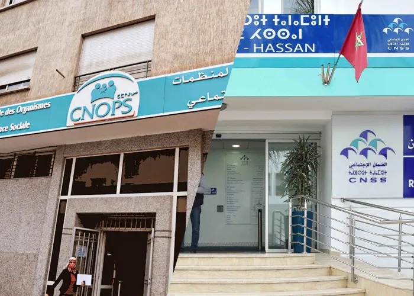

Réforme 2025 : Fusion de la CNOPS au sein de la CNSS
Juillet 2025
C'est l'un des chantiers sociaux les plus importants : la fusion de la CNOPS et de la CNSS. La CNSS deviendra l'interlocuteur unique pour l'AMO...